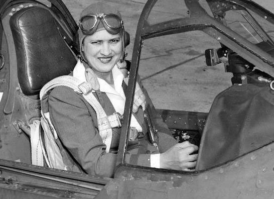

5
Badass
Women
of World War II
When focusing on World War II, history classes tell the stories of great men like Eisenhower, Churchill, and de Gaulle. Mention is made of the women who worked in factories while the men were away—an essential job, to be sure, not to be overlooked. But what about the women who not only took on the jobs of men, but outshone them, risked their own lives, and just plain kicked ass?
-

Virginia Hall
Before the United States entered the war, the British were valiantly standing up to the Germans. Virginia Hall was a British woman who worked in secret for years to sabotage the Nazis and train French resistance fighters, earning herself a reputation with the German Gestapo as "the most dangerous of Allied spies"—all this while coping with her prosthetic leg.
-

Jacqueline Cochran
Meet the woman who trained the WASPs (Women Airforce Service Pilots). Before the war, she asked for women to be allowed to fly in the military. She was told (essentially) to get back in the kitchen. Once the war began, U.S. military leaders realized maybe hiring the woman who could fly a plane faster than anyone alive would be useful after all.
-
Susan Travers
As the only woman in the French Foreign Legion, Susan was obviously not the type to sit still and look pretty. So when the Germans laid siege to the fort at which she was stationed in Libya, and supplies ran out after 15 days, it's no surprise that she hopped in her truck and said to her comrades, "Come with me if you want to live." Though her truck took 11 bullets during the escape, Susan and the French soldiers made it safely to Allied lines.
-
Hedy Lamarr
An Austrian-born actress who immigrated to America, Hedy is remembered for her beauty, not her brain, She was a passionate inventor, however, and worked with composer George Antheil on a method of making radio signals jump between frequencies, which would be useful to prevent enemy ships from jamming American torpedoes. This method eventually influenced major future technologies. Next time you use your GPS or Bluetooth, you can thank Hedy.
-
Nadezhda Popova
"Night Witches." These were the elite female pilots from the Soviet Union who carried out deadly nighttime bombing raids against the Germans. Some women have book club or yoga class... Nadezhda had the Night Witches. She flew a staggering 852 missions, not in a fancy marvel of modern technology, but in a tiny old biplane. She was shot down numerous times, but c'mon...she was Nadezhda Popova. There was no stopping her.
All images were taken from Wikipedia and are in the public domain. Information was found on upworthy.com.